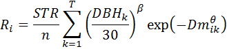
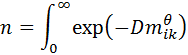
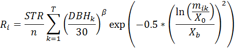
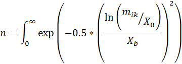

Spatial disperse behaviors
Spatial disperse behaviors rely on the location and size of parent trees to determine the number and placement of seeds. The placement of the seeds is controlled by a probability distribution function. You can choose between the Weibull and lognormal functions.
The Weibull function is as follows:

where,

and where:
- Ri is the density (#/m2) of seedlings at a given
point i
- STR, the "standardized total recruits", is the number of seedling recruits produced by a 30 cm DBH parent tree (the Weibull Canopy Annual STR or Weibull Gap Annual STR parameters)
- DBHk is the DBH in cm of the k = 1…T parent trees within a specified radius of location i
- D is a species-specific dispersal parameter (the Weibull Canopy Dispersal or Weibull Gap Dispersal parameters)
- mik is the distance (in meters) from point i to the kth parent tree
- θ and β are disperse parameters (the Weibull Canopy Theta or Weibull Gap Theta and Weibull Gap Beta or Weibull Canopy Beta parameters)
The lognormal function is as follows:

where,

and where:
- Ri is the density (#/m2) of seedlings at a given
point i
- STR, the "standardized total recruits", is the number of seedling recruits produced by a 30 cm DBH parent tree (the Lognormal Canopy Annual STR or Lognormal Gap Annual STR parameters)
- DBHk is the DBH in cm of the k = 1…T parent trees within a specified radius of location i
- mik is the distance (in meters) from point i to the kth parent tree
- X0 is the mean of the function (the Lognormal Canopy X0 or Lognormal Gap X0 parameters)
- Xb is the standard deviation of the function (the Lognormal Canopy Xb or Lognormal Gap Xb parameters)
- β is a disperse parameter (the Lognormal Canopy Beta or Lognormal Gap Beta parameters)
The maximum distance that seeds are allowed to disperse is the length of the grid in the longest direction, up to a maximum of 1000 meters. Because of the torus shape of the plot, a seed deposited at the very limit of the distance could end up back underneath the parent tree. For this reason, if you are using a very flat dispersal kernel, you may wish to consider a non-spatial disperse method.
The normalizer (Equation 3 of Ribbens et al 1994) serves two functions. It reduces parameter correlation between STR and the dispersion parameter (D); and scales the distance-dependent dispersion term so that STR is in meaningful units - i.e. the total # of seedlings produced in the entire seedling shadow of a 30 cm DBH parent tree.